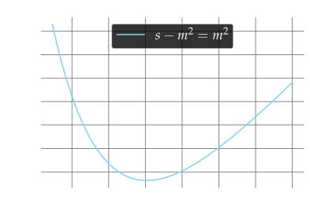

Differential cross section for Compton scattering
Sarah Alanazi
Jacan Chaplais
April, 2021
Outline
- Motivation: a revolution in quantum theory?
- Theoretical background
- Kinematics
- The invariant amplitude
- Method
- Evaluating the invariant amplitude
- The phase space integral
- Obtaining the differential cross section
- Results and conclusions
Motivation
Quantum fields: a new approach
In 1927, Dirac proposed that a quantum description of the interaction between radiation and matter may be elevated to a relativistic theory by quantizing the electromagnetic field [1].

However, in 1930 Oppenheimer discovered that perturbative approaches led to unphysical results beyond first order calculations, due to self-interaction [2].
Making sense of the idea
In 1947 Bethe suggested a mechanism for handling the infinite terms, called renormalisation [3]. This sparked renewed interest in quantum fields.

Following this, the theory was developed rapidly, with Feynman’s diagrammatic contribution reducing the technical barrier for performing calculations [4].

A need for confirmation
We explore our work to verify the theoretical work that has been done so far. We apply the calculation techniques in an attempt to recover Compton scattering.
This choice is symbolic of the movement semi-classical particle physics, to a full acceptance of the quantum theory [5].
Theory
Differential cross section
Cross section, \(\sigma\), used to characterise interaction strength. Analogous to effective cross sectional area of particle through beam, while capturing relativistic and quantum dynamics information.
\[ \begin{aligned} \mathrm{d} \sigma=& \frac{1}{2 E_{\mathcal{A}} 2 E_{\mathcal{B}}\left|v_{\mathcal{A}}-v_{\mathcal{B}}\right|}\left(\prod_{f} \frac{\mathrm{d}^{3} p_{f}}{(2 \pi)^{3}} \frac{1}{2 E_{f}}\right) \\ &\left|\mathcal{M}\left(p_{\mathcal{A}}, p_{\mathcal{B}} \rightarrow\left\{p_{f}\right\}\right)\right|^{2}(2 \pi)^{4} \delta^{(4)}\left(p_{\mathcal{A}}+p_{\mathcal{B}}-\sum p_{f}\right) \end{aligned} \]
Constructed from phase space volume, invariant amplitude \(\mathcal{M}\), and momentum conserving Dirac delta terms.
Invariant amplitude
By applying the Feynman rules to these diagrams and grouping terms, we obtain \[ i \mathcal{M}=i e^{2} \epsilon_{\mu \lambda^\prime}^{\ast} \left(k^{\prime}\right) \epsilon_{\nu \lambda}\left(k\right) \bar{u}^{s^{\prime}}\left(p^{\prime}\right) \left( \dfrac{% numerator \gamma^{\mu}(\not{p}+k+m) \gamma^{\nu}} {(p+k)^{2}-m^{2}}% denominator + \dfrac{% numerator \gamma^{\nu} \left(\not{p}-k^{\prime}+m\right) \gamma^{\mu}} {\left(p-k^{\prime}\right)^{2}-m^{2}}% denominator \right) u^{s}(p) \]
Invariant amplitude cont’d
This unwieldy expression can be reduced a little by expanding the binomials in the denominator, and observing for the numerator \[ \begin{aligned} (\not{p}+m) \gamma^{\nu} u^{s}(p) &= \left(2 p^{\nu} - \gamma^{\nu}\not{p} + \gamma^{\nu} m\right) u^{s}(p) \\ &=2 p^{\nu} u^{s}(p)-\gamma^{\nu}\underbrace{(\not{p}-m) u^{s}(p)}_{ \text{Dirac equation} \implies 0 } \\ &=2_{} p^{\nu} u^{s}(p) \end{aligned} \]
which yields the invariant amplitude in the simpler form \[ i \mathcal{M}= -i e^{2} \epsilon_{\mu \lambda^\prime}^{\ast} \left(k^{\prime}\right) \epsilon_{\nu\lambda}(k) \bar{u}^{s^\prime}\left(p^{\prime}\right) \left( \frac{\gamma^{\mu} \not{k}\gamma^{\nu}+2 \gamma^{\mu} p^{\nu}} {2 p \cdot k} + \frac{-\gamma^{\nu} \not{k}^{\prime} \gamma^{\mu}+2 \gamma^{\nu} p^{\mu}} {-2 p \cdot k^{\prime}}\right) u^{s}(p)\text{.} \]
Phase space integral
The phase space volume for a two particle collision may be defined by the integral,
\[ \int \mathrm{d} \Pi_{2}=\int \frac{\mathrm{d}^{3} k^{\prime}} {(2 \pi)^{3} 2 E_{k^{\prime}}} \frac{\mathrm{d}^{3} p^{\prime}}{(2 \pi)^{3} 2 E_{p^{\prime}}}(2 \pi)^{4} \delta^{4}\left(p+k-k^{\prime}-p^{\prime}\right) \text{.} \]
By making careful substitutions, and using fundamental theorem of calculus, can extract derivative of cross section wrt specific quantities, eg. \(\mathrm{d}\sigma / \mathrm{d}\cos\theta\).
The phase space of an interaction carries its kinematic information. It depends on masses, energies and momenta. Therefore, it’s not frame invariant.
Kinematics
During this calculation, we shall make use of two different inertial reference frames to obtain our final result. Mandelstam variables are constructed from the incoming and outgoing momenta of the interaction. \[ \begin{array}{lllllllll} s &=& (p+k)^{2} &=& p^{2}+k^{2}+2 p \cdot k &=& m^{2}+2 p \cdot k &=& m^{2}+2 p^{\prime} \cdot k^{\prime} \\ t &=& \left(p^{\prime}-p\right)^{2} &=& p^{\prime 2}+p^{2}-2 p \cdot p^{\prime} &=& 2 m^{2}-2 p \cdot p^{\prime} &=& -2 k \cdot k^{\prime} \\ u &=& \left(k^{\prime}-p\right)^{2} &=& k^{\prime 2}+p^{2}-2 k^{\prime} \cdot p &=& m^{2}-2 k^{\prime} \cdot p &=& m^{2}-2 k \cdot p^{\prime} \end{array} \] Casting transition amplitudes in terms of these manifestly Lorentz invariant quantities allows us to jump between frames with ease.
Centre-of-mass frame
Inertial frame in which sum of spatial momenta is zero.

Lab frame
Inertial frame in which the electron is at rest. This will also be the assumed rest frame for our particle detectors, hence lab frame.

Evaluating invariant amplitude
Spin averages and polarisation sums
In the unpolarised case, we do not know the spins of particles. The beam of electron orientations are random, so we average over all initial particles, and sum over all final particles.
\[ \begin{aligned} \frac{1}{4} \sum_{\text {spins}}|\mathcal{M}|^{2}= \dfrac{e^{4}}{4} \bigg[ &\left(\not{p}^{\prime} + m\right) \left( \dfrac{% numerator \gamma^{\mu} \not{k} \gamma^{\nu} + 2 \gamma^{\mu} p^{\nu}} {2 p \cdot k}% denominator + \dfrac{% numerator \gamma^{\nu} \not{k}^{\prime} \gamma^{\mu} -2 \gamma^{\nu} p^{\mu}} {2 p \cdot k^{\prime}}% denominator \right) \\ & \left(\not{p} + m\right) \left( \dfrac{% numerator \gamma_{\nu} \not{k} \gamma_{\mu} + 2 \gamma_{\mu} p_{\nu}} {2 p \cdot k}% denominator + \dfrac{% numerator \gamma_{\mu} \not{k}^{\prime} \gamma_{\nu} - 2 \gamma_{\nu} p_{\mu}} {2 p \cdot k^{\prime}} % denominator \right) \bigg] \end{aligned} \]
\[ \langle |\mu|^2 \rangle = \dfrac{1}{4} \sum_\text{spins} | \mu |^2 \]
Working out the traces
\[ \frac{1}{4} \sum_{\text {spins}}|\mathcal{M}|^{2} = \dfrac{e^4}{4} \left[ \dfrac {\operatorname{Tr} A} {\left(2 p \cdot k\right)^2} + \dfrac {\operatorname{Tr} B} {\left(2 p \cdot k\right) \left(2 p \cdot k^{\prime} \right)} + \dfrac {\operatorname{Tr} C} {\left(2 p \cdot k^{\prime} \right)\left(2 p \cdot k\right)} + \dfrac {\operatorname{Tr} D} {\left(2 p \cdot k^{\prime} \right)^2} \right] \]
By using algebra that is facilitated by a number of theorems, the traces can be calculated.
\[ \begin{aligned} \frac{1}{4} \sum_{\text {spins }}|\mathcal{M}|^{2}= 2 e^{4} \left[ \frac{m^2 - u}{s - m^2} + \frac{s - m^2}{m^2 - u}\right. +&\left. 2 m^{2}\left( \frac{2}{s - m^2} - \frac{2}{m^2 - u} \right) \right. \\ +& \left. m^{4}\left( \frac{2}{s - m^2} - \frac{2}{m^2 - u} \right)^{2} \right] \end{aligned} \]
Phase space integral
Phase space
\[ \int \mathrm{d} \Pi_{2}= \int \frac{\mathrm{d}^3 k^{\prime}}{(2 \pi)^{3} 2 E_{k^{\prime}}} \frac{\mathrm{d}^3 p^{\prime}}{(2 \pi)^{3} 2 E_{p^{\prime}}} (2 \pi)^{4} \delta^{(4)}\left(p + k - k^{\prime} - p^{\prime}\right) \]
\[ \delta^{(4)}\left(p + k - k^{\prime} - p^{\prime}\right) = \delta\left( E_\mathbf{p} + \omega - E_\mathbf{p}^\prime - \omega^\prime \right) \delta^{(3)}\left( | \mathbf{p} | + | \mathbf{k} | - | \mathbf{p}^\prime | - | \mathbf{k}^\prime | \right) \]
\[ \mathrm{d}^3 p = | \mathbf{p} |^2 \mathrm{d}p \; \mathrm{d}\Omega \]
In centre-of-mass frame
In the centre-of-mass frame, the 4-momenta of incoming and outgoing particles are \[ \begin{array}{cccc} p = (E, \mathbf{p}) & k = (\omega, \mathbf{k}) & p^\prime = (E, \mathbf{p}^\prime) & k^\prime = (\omega^\prime, \mathbf{k}^\prime) & \end{array} \]
and the phase space integral takes the form \[ \int \mathrm{d} \Pi_{2} = \frac{1}{16 \pi^{2}} \int \mathrm{d} \Omega \frac{\omega}{E_{\text{CoM}}} \]
In lab frame
Whereas in the lab frame, the 4-momenta are given by \[ \begin{array}{cccc} p = (m, 0) & k = (\omega, \mathbf{k}) & p^\prime = (E^\prime, \mathbf{p}^\prime) & k^\prime = (\omega^\prime, \mathbf{k}^\prime) & \end{array} \]
and the phase space integral is obtained as
\[ \int \mathrm{d} \Pi_{2} = \dfrac{1}{16 \pi^2} \int \mathrm{d}\Omega \frac{\omega^{\prime \; 2}}{m \omega} \]
Obtaining the cross section
Function of squared momentum transfer
We may now bring our equations for the phase space integral and the invariant amplitude together. Writing in terms of the Mandelstam variables in the centre-of-mass frame, we obtain \[ \begin{aligned} \dfrac{\mathrm{d}\sigma\left(s, t\right)}{\mathrm{d}t} = \dfrac{2\pi\alpha^2}{\left(s - m^2\right)^2} \left[ \frac{s + t - m^2}{s - m^2} + \frac{s - m^2}{s + t - m^2}\right. +&\left. 2 m^{2}\left( \frac{2}{s - m^2} - \frac{2}{s + t - m^2} \right) \right. \\ +& \left. m^{4}\left( \frac{2}{s - m^2} - \frac{2}{s + t - m^2} \right)^{2} \right] \end{aligned} \]
Function of angle
We perform the same procedure, in the lab frame, to obtain the angular dependence.
\[ \begin{aligned} \dfrac{\mathrm{d}\sigma}{\mathrm{d}\cos\theta} = \dfrac{1}{4m\omega} \dfrac{1}{8\pi} \dfrac{\omega^{\prime \; 2}}{\omega m} 2 e^{4} \left[ \frac{m^2 - u}{s - m^2} + \frac{s - m^2}{m^2 - u}\right. +&\left. 2 m^{2}\left( \frac{2}{s - m^2} - \frac{2}{m^2 - u} \right) \right. \\ +& \left. m^{4}\left( \frac{2}{s - m^2} - \frac{2}{m^2 - u} \right)^{2} \right] \end{aligned} \]
Writing in terms of photon momenta obtains the famous Klein-Nishina formula [6]
\[ \dfrac{\mathrm{d}\sigma}{\mathrm{d}\cos\theta} = \frac{\pi \alpha^{2}}{m^{2}} \left(\frac{\omega^{\prime}}{\omega}\right)^{2} \left[\frac{\omega^{\prime}}{\omega}+\frac{\omega}{\omega^{\prime}}-\sin ^{2} \theta\right] \]
Results
QED prediction for \(\rm{d}\sigma/\rm{d}\cos\theta\)
QED prediction for \(\rm{d}\sigma/\rm{d}t\)
QED prediction for \(\rm{d}\sigma/\rm{d}t\)

QED prediction for \(\rm{d}\sigma/\rm{d}t\)
Conclusion
In this work, we have used the new Quantum Electrodynamics to recover the known scattering relationship between light and electrons, as written down by Compton.
The processes were interpreted via tree-level Feynman diagrams, at the lowest order.
Future work may involve higher order calculations, and the inclusion of loops, to determine if this formulation makes new predictions about this interaction.
Thank you for your attention, we welcome any questions.
References
[1] Dirac PAM. Quantum theory of emission and absorption of radiation. Proc Roy Soc Lond A 1927;114:243. https://doi.org/10.1098/rspa.1927.0039.
[2] Oppenheimer JR. Note on the Theory of the Interaction of Field and Matter. Physical Review 1930;35:461–77. https://doi.org/10.1103/PhysRev.35.461.
[3] Bethe HA. The Electromagnetic Shift of Energy Levels. Physical Review 1947;72:339–41. https://doi.org/10.1103/PhysRev.72.339.
[4] Feynman RP. The Theory of Positrons. Physical Review 1949;76:749–59. https://doi.org/10.1103/PhysRev.76.749.
[5] Compton AH. A quantum theory of the scattering of x-rays by light elements. Phys Rev 1923;21:483–502. https://doi.org/10.1103/PhysRev.21.483.
[6] Klein O, Nishina T. Über die Streuung von Strahlung durch freie Elektronen nach der neuen relativistischen Quantendynamik von Dirac. Zeitschrift Fur Physik 1929;52:853–68. https://doi.org/10.1007/BF01366453.